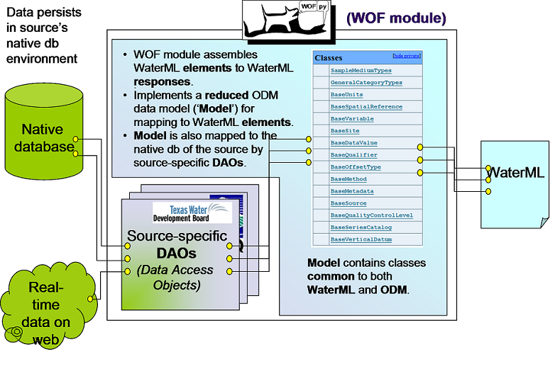

WOFpy Architecture¶
When you download and open WOFpy, you can find the following folders
WOFpy’s components¶
As mentioned earlier, WOFpy can be compared to a restaurant. The components of WOFpy can be compared to the following members of the catering staff:

Web services (Waiters)¶
Web services are what the data consumer interact with. WOFpy provides both REST (REpresentational State Transfer) and SOAP (Simple Object Access Protocol) web services. These web services are designed to handle the four main WaterOneFlow methods: GetSites, GetVariables, GetSiteInfo and GetValues.
WOF (Cook)¶
WOF is the core package within WOFpy. Processes web service requests Uses DAOs to acquire data from native database Assembles WaterML objects into WaterML and returns them Contains SOAP and REST web service classes and URL templates
Database (Pantry)¶
Organized the way you want to organize it.
DAOs (Recipes)¶
DAO = Data Access Packages Contains Object Relational Mapping (ORM) to map from native database schema to WaterML objects. Customized by data provider
Management Script (Restaurant Owner/Manager)¶
Determines which native database(s) to publish Determines which DAO(s) to use Starts the WOFpy web services
From the viewpoint of the code, the following diagram shows the location of the different components within WOFpy’s file structure.
WOFpy in action¶
WOFpy file structure¶
When you download and open WOFpy. You will notice that it contains the following file structure.
(Only selected folders are expanded).
\WOFPY
| readme.txt
| setup.py
+---docs\
+---examples\
| barebones
| csv
| cbi
| odm_1_1
| odm2
| swis
+---test\
+---wof\
| core.py
| core_1_1.py
| core_1_0.py
| dao.py
| models.py
| WaterML.py
| WaterML_1_1.py
| WofWsdls.py
| __init__.py
+---flask\
| config.py
| __init__.py
|
+---templates\
index.html
wml2_values_template.xml
wsdl_temp.wsdl
+---apps\
| __init__.py
| spyned_1_0.py
| spyned_1_1.py
| waterml2.py
| wsdl.py
+---templates\
| wml2_values_template.xml
| wsdl_1_1_template.wsdl
| index.html
| index_1_0.html
| index_1_1.html
| index_2.html
- The WOFPy api uses spyne.io. This allows for the API to be utilized by multiple service platforms.
- The present examples utlize the flask service stack.
WOFpy modules and packages¶
(to be linked to epydoc files in /_build/html/epydoc/)